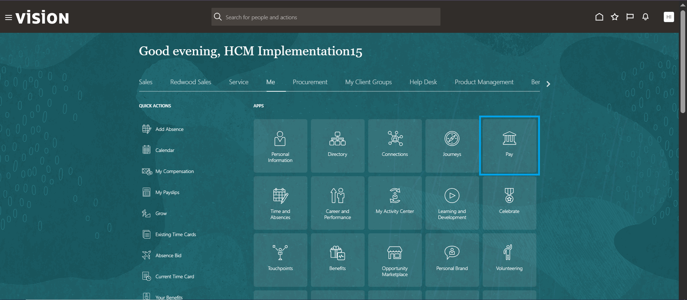
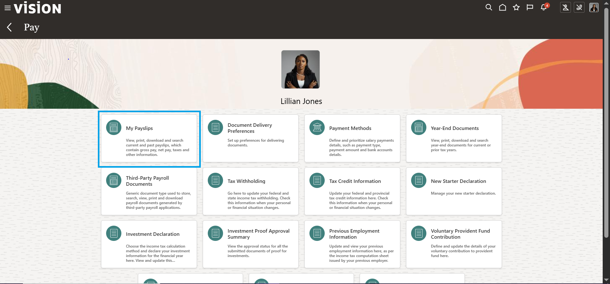
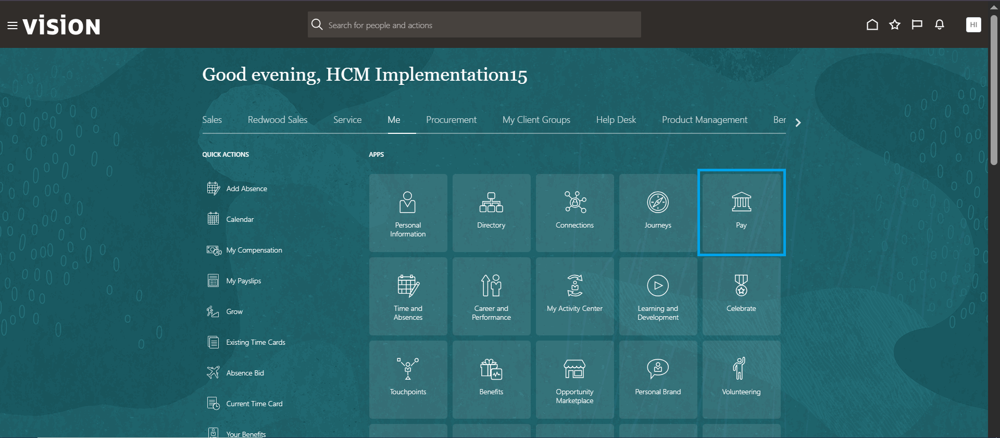
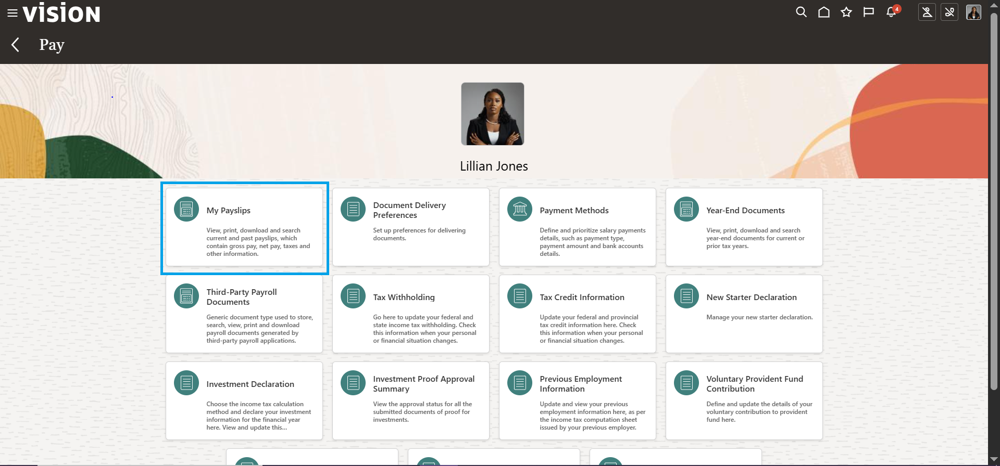

Payroll
How to Generate Payslip
01 - To access your Payroll, Navigate to the Me tab on the homepage and select the Pay tile.
02 - In the Pay homepage, click on My Payslips.
01 - To access your Payroll, Navigate to the Me tab on the homepage and select the Pay tile.
02 - In the Pay homepage, click on My Payslips.
